For this part, we were tasked with implementing the convolution operation by hand, with four loops and two loops, and comparing these to the built-in convolution function given by scipy.signal.convolve2d. We implemented padding with zero-fill values to make the images the same size as the kernel after the convolution operation.
The four loop implementation was quite simple as all we had to do was iterate over the image and the kernel, and it was easy to see that it was slower than the two loop implementation. However, it was easier to implement and understand since the two loop version required us to do a lot of complicated math with indices and offsets. The two loop implementation was a bit more difficult, and it was a bit more difficult to see how it was working. However, it was a bit faster than the four loop implementation. The scipy convolution function was the fastest and easiest to use especially with the built-in padding options. I will likely continue to use this function for the rest of the assignment.
Here is the code for the two and four loop implementations:
def pad_image(image, kernel):
kh, kw = kernel.shape
pad_h, pad_w = kh // 2, kw // 2
return np.pad(image, ((pad_h, pad_h), (pad_w, pad_w)), mode="constant")
def convolve_four_loops(image, kernel):
k = np.flip(kernel, (0, 1))
kh, kw = k.shape
padded = pad_image(image, k)
out = np.zeros(image.shape, dtype=np.float64)
H, W = image.shape
for i in range(H):
for j in range(W):
acc = 0.0
for r in range(kh):
for c in range(kw):
acc += padded[i + r, j + c] * k[r, c]
out[i, j] = acc
return out
def convolve_two_loops(image, kernel):
k = np.flip(kernel, (0, 1))
kh, kw = k.shape
padded = pad_image(image, k)
out = np.zeros(image.shape, dtype=np.float64)
H, W = image.shape
for i in range(H):
for j in range(W):
window = padded[i:i+kh, j:j+kw]
out[i, j] = np.sum(window * k)
return out
To compare the implementations more concretely, I took a picture of myself in greyscale and timed the convolution operations for each implementation. Here are the results:
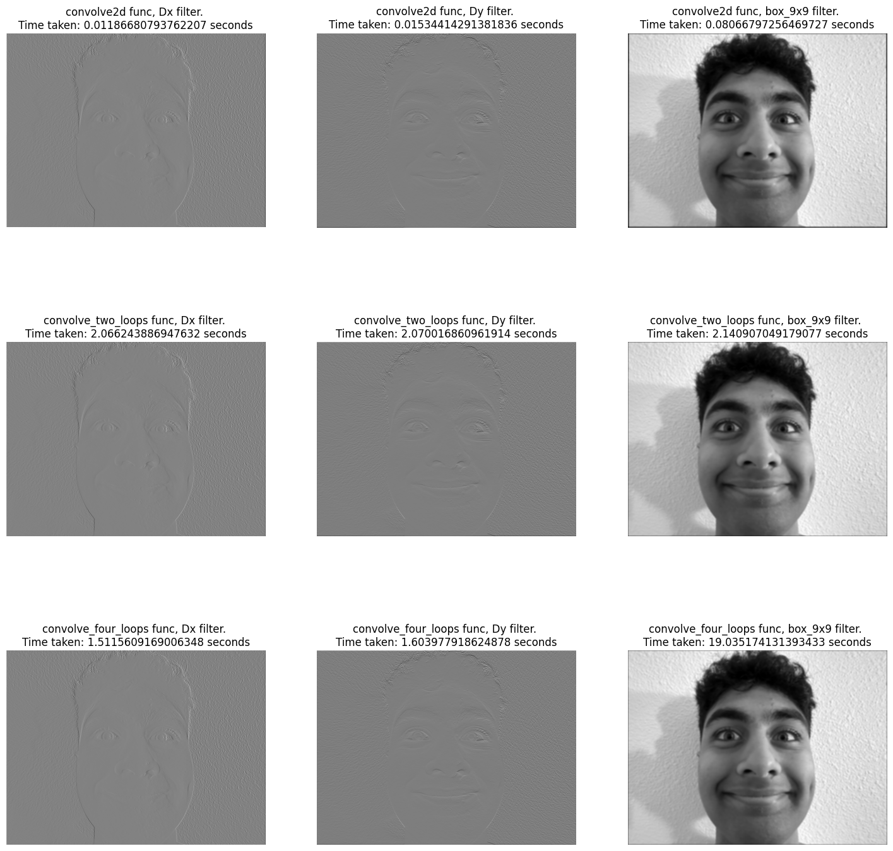
As we can see, the four loop implementation was much slower than the two loop implementation, and the scipy convolution function was the fastest. We can see that the four loop implementation took 19 seconds for the box filter convolution, while the two loop only took two seconds, and the convolve2d function only tool. 08 seconds. Clearly the builtin function is the fastest (maybe because it's written in C). I will likely continue to use the scipy convolution function for the rest of the assignment.
In this part, we had to first take the partial derivative of the cameraman image in the x and y directions, and then show the gradient magnitude of the image. We also thresholded the gradient magnitude to only show the edges of the image.
Here are the dx, dy, and gradient magnitude images:
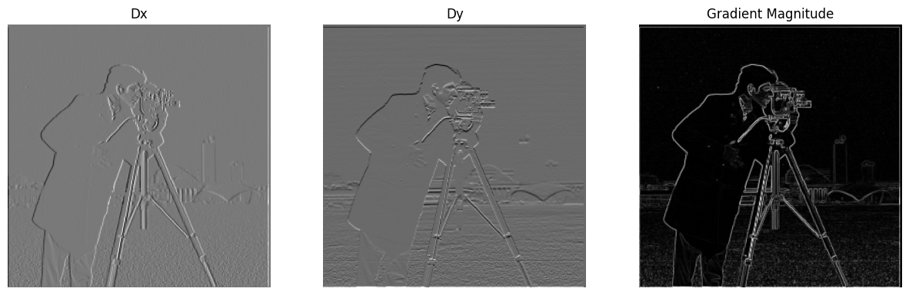
We can see that the dx and dy images are very similar to the gradient magnitude image, which is what we expected. The gradient magnitude image is a bit more noisy, but it's still a pretty good representation of the edges of the image. To get the edges, we just thresholded the gradient magnitude image to only show the edges.
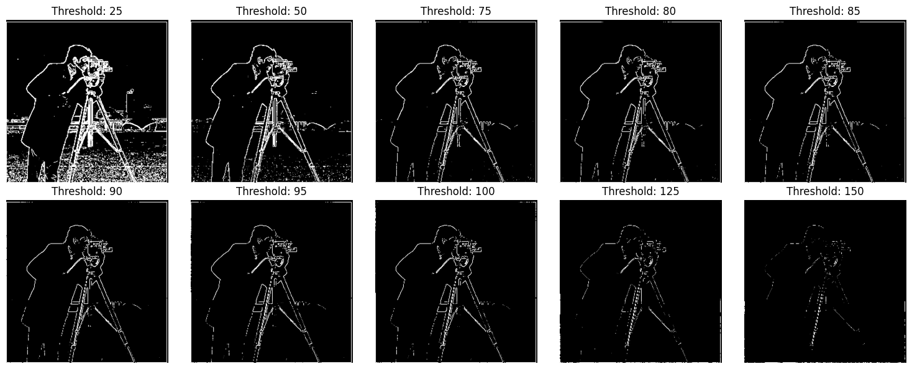
Clearly, we can see that the best threshold is 90. Here is the final, gradient magnituded, and thresholded image:
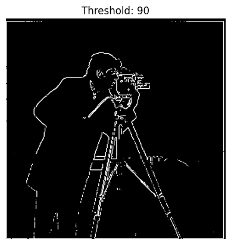
One thing to note though is that we had to tradeoff a lot to get this threshold, since minimizing noise also minimized the edges. Additionally, we had to use a very small threshold to get the edges to show up, which is why the final image is so noisy.
To fix this noise issue, we build Derivative of Gaussian (DoG) filters, which are a combination of a Gaussian filter and a finite difference operator. We then applied this filter to the cameraman image and showed the result.
To build the DoG filter, we first built a one-dimensional Gaussian filter, and took the outer product of this filter with itself to get the two-dimensional Gaussian filter. This gaussian filter is a low-pass filter, meaning that it removes high frequencies and preserves low frequencies through blurring. We then took the partial derivative of the Gaussian filter in the x and y directions to get the DoG filter.
Here are the results applying the gaussian filter:
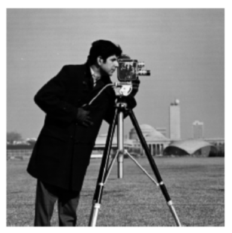
Then, taking the partial derivative of the Gaussian filter in the x and y directions, we get the DoG filter:
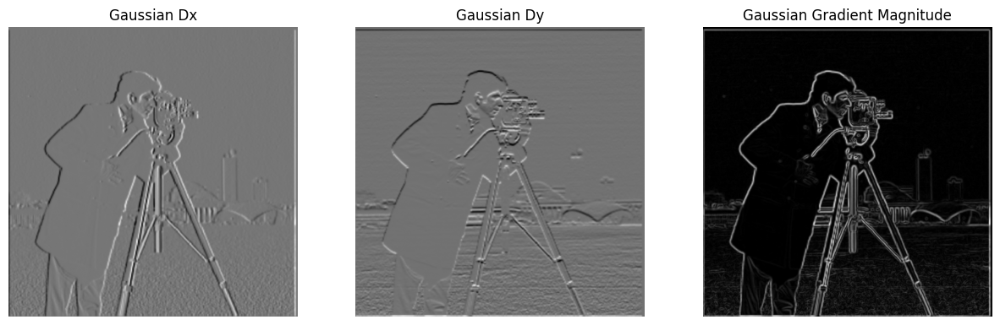
We can clearly see that the DoG filter has much sharper edges than the original method. However, we still need to apply a threshold to get the edges to show up. Here are some sample thresholds:
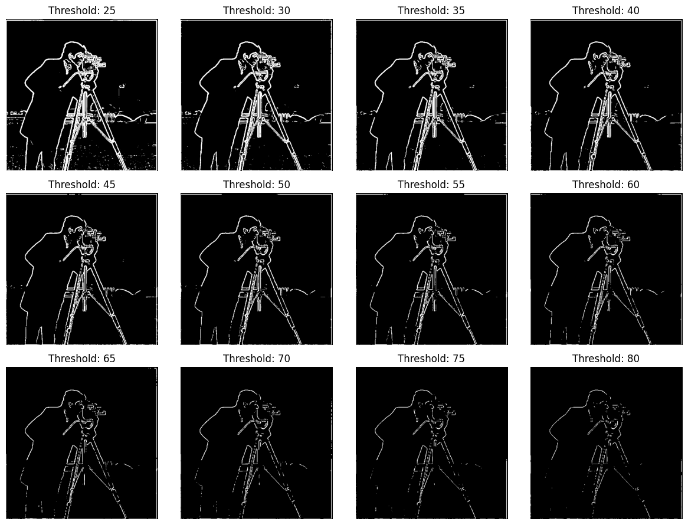
Clearly, we can see that the best threshold is 55. Another thing to note is that we have a lot less decision in tradeoffs between noise and edges than the original method, however looking closely there are still some edges and noise. Here is the final, DoG, and thresholded image:
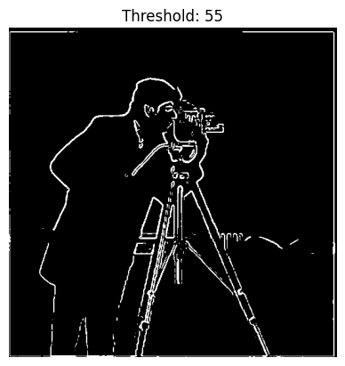
Here is a comparison of the original method and the DoG method:
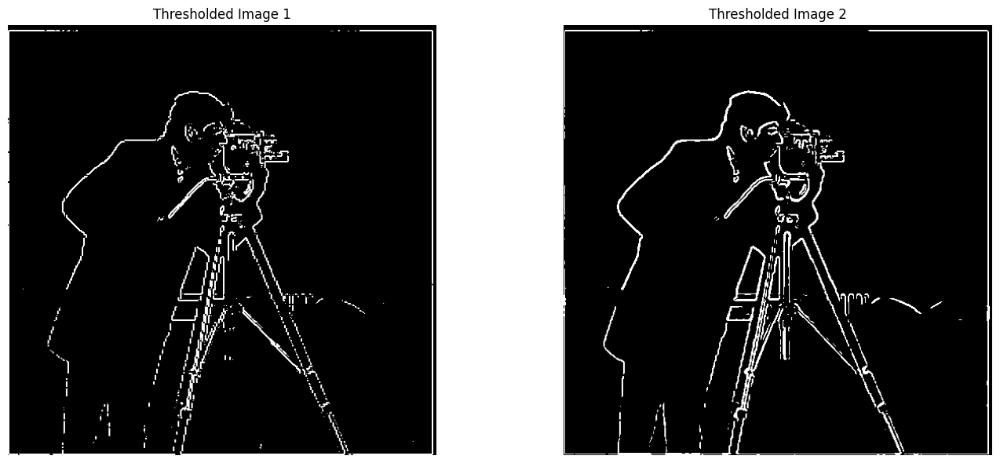
We can also coalesce this operation into a single convolution operation, which is a bit faster. To get this, we simply subtract the gaussian filter from the impulse filter, creating a single filter that can be applied to the image with one convolution operation. Here is the result of this operation, making sure that the results are the same:
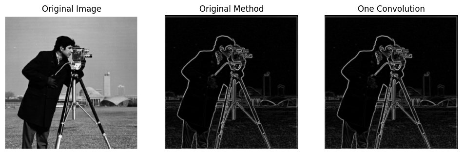
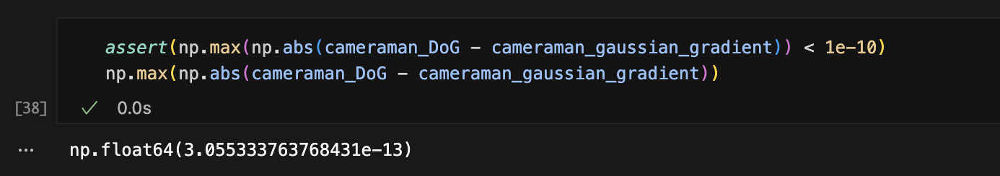